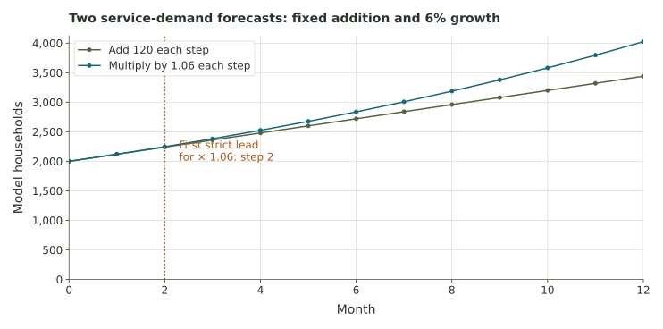

Two growth models
Compare fixed monthly additions with fixed percentage growth, then interpret a longer forecast.
Forecasting service demand
A town planning office compares two hypothetical forecasts for the number of households needing a service. Both start at 2,000 households in month 0.
Model A: a fixed addition
Add 120 households each month.
\[A_0=2000,\quad A_{n+1}=A_n+120.\]Model B: a fixed percentage
Add 6% of the current total each month, giving factor 1.06.
\[B_0=2000,\quad B_{n+1}=1.06B_n.\]The subscript n gives the month number. Month 0 is the starting value, and each later month applies the rule once more.
1. Compute the first four months
Start both models at 2,000. For A, add 120 each time. For B, multiply the current total by 1.06. Use unrounded values in your calculations. Report estimates as whole households or to two decimal places.
| Month | Model A | Model B |
|---|---|---|
| 0 | 2000 | 2000 |
| 1 | ||
| 2 | ||
| 3 | ||
| 4 |
2. Compare the models
Each month's 6% increase is calculated from that month's starting total.
3. Identify what stays constant
A difference subtracts one term from the next. A ratio divides the next term by the current term.
4. Forecast month 12
The direct formulas are \(A_n=2000+120n\) and \(B_n=2000(1.06)^n\). For Model B, multiply the starting value by 1.06 twelve times.
